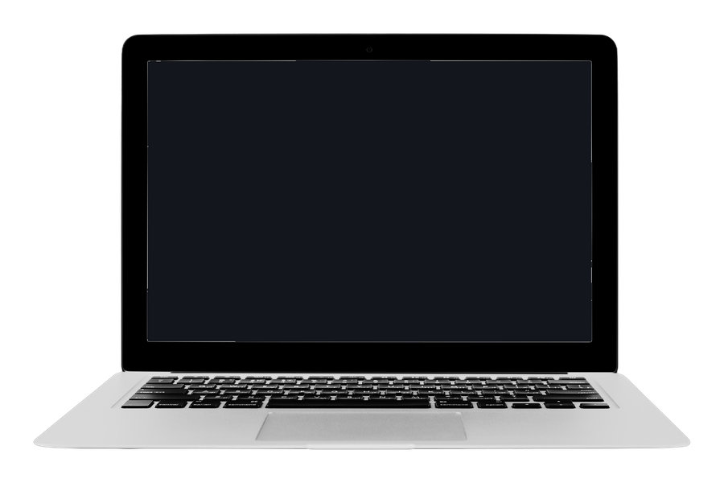

4 · Paperwork
Every SAG, WGA, DGA, and IATSE deadline, merged into one calendar — with its source cited.

A first-time producer’s real fear: a SAG filing deadline, a WGA packet due date, an IATSE notice window — four unions, four separate paperwork tracks, none of them coordinated with each other.
This tool does two things nothing else in this category does at all. It fills the actual paperwork — open the companion Filler in any browser, enter your production’s details once, and it fills WGA’s real filing packet, SAG-AFTRA’s Cast Clearance form, and the Exhibit G time report directly onto the unions’ own PDFs.
For the forms the unions don’t provide a fillable version of at all, it generates a clean, correct equivalent. And the workbook itself tracks every deadline across every union in one chronological list, each one cited to where it actually comes from.